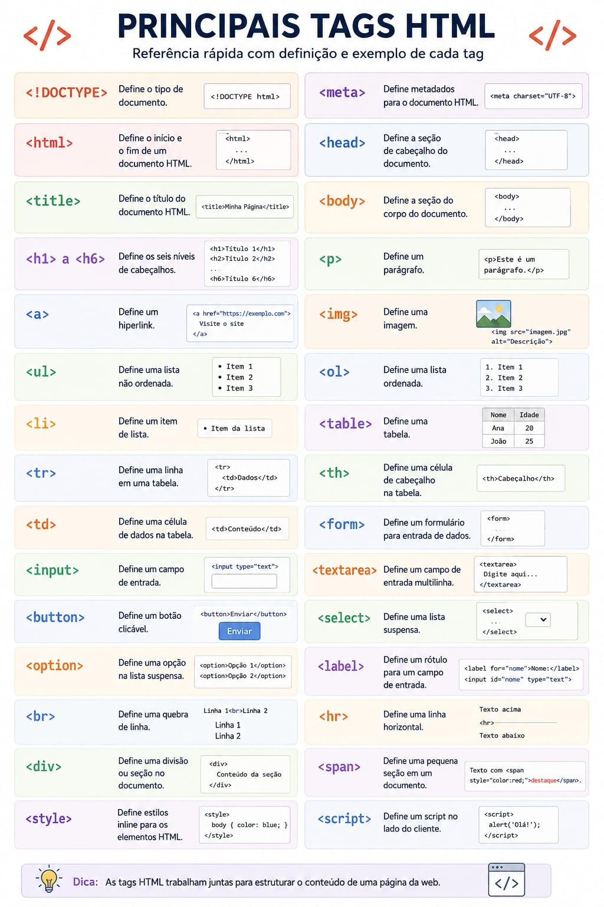

Agora que você já sabe o que é lógica de programação, vamos começar a aprender a programar de verdade! Para isso, vamos usar uma linguagem de programação chamada HTML, CSS e JavaScript.
HTML (HyperText Markup Language ou Linguagem de Marcação de Hipertexto) é o componente básico da web. Não é uma linguagem de programação, mas sim uma linguagem de marcação usada para estruturar e dar significado ao conteúdo de sites e aplicativos online, organizando textos, imagens e vídeos
junto com html tem as tags diversas desde titulo até paragrafo

essas tags são fundamentais para criar estruturas de página web. existem vários tipos de tags, cada uma com um propósito específico.
CSS (ou Cascading Style Sheets / Folhas de Estilo em Cascata) é a linguagem utilizada para estilizar e dar design a uma página web. Enquanto o HTML cuida da estrutura e do conteúdo do site, o CSS é responsável pela aparência visual, como cores, fontes, espaçamentos, tamanhos e organização dos elementos na tela.
O CSS (Cascading Style Sheets) não possui "tags" próprias; ele utiliza seletores para estilizar as tags estruturais do HTML. Os estilos são aplicados chamando o nome da tag, classe ou ID. As propriedades de estilização essenciais estão divididas por categorias práticas a seguir.
O JavaScript é uma linguagem de programação de alto nível usada principalmente para criar interatividade, dinamismo e comportamento inteligente em páginas da web e aplicativos. Ele é executado diretamente nos navegadores dos usuários e é um dos pilares fundamentais da internet.
O JavaScript não possui "tags" próprias; ele utiliza tags HTML para ser inserido ou referenciado em uma página web. Para criar listas ou dinamicamente gerar elementos nelas, você usa o próprio HTML junto com os métodos de manipulação do DOM.